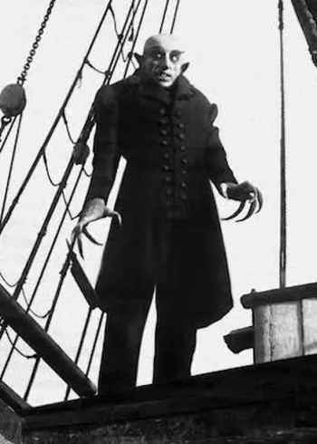

Nosferatu
May 18, 1922
1 Hr 34 Min
Fantasy / Horror
7.9 / 10
The mysterious Count Orlok summons Thomas Hutter to his remote Transylvanian castle in the mountains. The eerie Orlok seeks to buy a house near Hutter and his wife, Ellen. After Orlok reveals his vampire nature, Hutter struggles to escape the castle, knowin tat Ellen is in grave danger. Meanwhile Orlok's servant, Knock, prepares to his master to arrive at his new home.
Cast